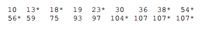
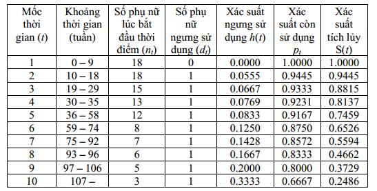

Survival analysis được sử dụng trong phân tích thời gian xảy ra sự kiện. VD:
Thời gian chuyển sang AIDS của bệnh nhâ HIV
Thời gian khách hàng ngưng sử dụng dịch vụ sau khi đăng ký
Biến được sử dụng trong phân tích là thời gian.
Đối với survival analysis, dữ liệu có các đặc trưng sau:
Biến phụ thuộc là biến thời gian
Dữ liệu có đặc trưng censor.
Right censoring là thuật ngữ mô tả sự kiện diễn ra sau khoảng thời gian phân tích. Ví dụ, nghiên cứ 100 bệnh nhân HIV trong khoảng thời gian 1 năm. Trong thời gian đó, có 10 bệnh nhân chuyển qua AIDS, 90 bệnh nhân còn lại chưa qua AIDS trong một năm đó nhưng ta đều biết rằng họ SẼ chuyển thành AIDS. Dữ liệu kiểu vậy được gọi là right censoring. Thời gian bệnh nhân CHÍNH XÁC chuyển qua AIDS nằm ngoài khoảng thời gian quan sát.
Left censoring: Thời gian diễn ra sự kiện trước khoảng thời gian diễn ra quan sát
Đối với các vấn đề như trên, việc dự báo họ chuyển thành AIDS hay không không quan trọng. Quan trọng là KHI NÀO họ chuyển thành AIDS.
Lưu ý:
Đối với survival analysis, ta thường không có đủ dữ liệu về đối tượng. VD: Trong 100 bệnh nhân tham gia, có bệnh nhân vào nghiên cứu từ tháng 6, tức là khi kết thúc nghiên cứu, bệnh nhân đó chỉ có dữ liệu 6 tháng
Nếu ta có đầy đủ dữ liệu vè thời gian khách hàng/bệnh nhân từ khi quan sát đến khi xảy ra sự kiện, ta có thể dùng regression thông thường
53.2 Lý thuyết
Gọi T là thời gian xảy ra sự kiện từ khi quan sát, với cdf F(.) và pdf f(.), ta có:
Với t = 0, S(t) = 1. Với t tiến đến \(\infty\), S(t) tiến đến 0
Bởi vì:
\[F(x) = 1 - S(x)\]
Đạo hàm hai vế, ta được:
\[f(t) = -\frac{dS}{dt}\]
**Hàm nguy cơ \(h(t)\) hay \(\lambda(t)\) (hazard function) cho ta biết xác suất xảy ra sự kiện tại ngay thời điểm t.
\[h(t) = \lim_{dt \to 0}\frac{(t < T \leq t + dt | T > t)}{dt} =
\lim_{dt \to 0}\frac{F(t+dt)}{S(t)dt}=\frac{f(t)}{S(t)} =
\frac{-dS(t)/dt}{S(t)} = -\frac{dlog(S(t))}{dt}\]
Hàm nguy cơ tích lũy (cumulative hazard function):
\[H(t) = \int_0^th(u)du = -log(S(t))\]
Từ đó ta có:
\[S(t) = e^{-H(t)} = exp(-H(t))\]
Lưu ý:
Hàm survival S(t) cho ta biết xác suất tích lũy sống qua thời điểm xảy ra sự kiện T
Hàm F(t) cho ta biết xác suất tích lũy chỉ sống đến thời điểm T
Hàm nguy cơ h(t) cho ta biết xác suất xảy ra sự kiện NGAY tại thời điểm T.
VD: Xác suất người chết ở tuối 100 rất thấp vì rất ít người sống đến 100 (F(t)). Tuy nhiên, xác suất người chết ở tuổi 100 với điều kiện người đó ĐÃ bước sang tuổi 100 sẽ cao hơn rất nhiều
53.2.1 Ước lượng Kaplan-Meier cho F(t)
Xác suất xảy ra hai sự kiện A1 và A2 đồng thời như sau:
\[P(A_1 \cap A_2) = P(A_2|A_1)*P(A_1)\]
Do đó, hàm survival (S) cho ta biết xác suất các đối tượng sống sót qua thời gian t. Bản chất của hàm Survival là xác suất có điều kiện như sau:
P(sống qua t + 1) = P(sống qua t)*P(sống qua t+1| sống qua t)
Trong survival analysis, các sự kiện được gọi là death, nhưng có thể có rất nhiều cách tiếp cận khác nhau: thời gian mua sản phẩm thứ 2 sau sản phẩm thứ nhất, thời gian KH rời bỏ doanh nghiệp…
Ước lượng này được gọi là ước lượng Kaplan-Meier hay product limit estimate
Hàm nguy cơ (h hay ) cho ta biết xác suất xảy ra biến cố tại thời điểm t.
Giả sử có 18 bệnh nhân như sau:

Dấu * cho biết bệnh nhân vẫn tiếp tục sử dụng thiết bị

Giải thích:
Ở thời gian t=2 (tuần 10-18), có một người ngưng sử dụng, xác suất ngưng sử dụng là \(\frac{1}{18}\). Xác suất còn sử dụng p là \(\frac{17}{18}\). Xác suất sống sót t = 2 là \(1*\frac{17}{18}=\frac{17}{18}=0.9445\)
Ở thời gian t=3 (tuần 19-29), có một người ngưng sử dụng, xác suất ngưng sử dụng là \(\frac{1}{15}\). Xác suất còn sử dụng là \(\frac{14}{15}\). Xác suất sống sót của tất cả sample qua t = 3 là \(\frac{14}{15} * \frac{17}{18}\)
53.3 Thực hành
library(dplyr)library(survival)library(KMsurv)library(ggfortify)library(ISwR)theme_set(theme_minimal())data(melanom)melanom %>% head